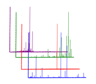

MassIVE Datasets
MassIVE is an online repository for publicly available datasets. MassIVE provides a location for researchers to access datasets that have been made available by others, oftentimes alongside publication. The datasets available remain alive long after publication. At GNPS, users will be able to
- Browse datasets - Explore all public GNPS datasets
- Download datasets - Download full dataset for offline processing/reanalysis
- Re-Analyze datasets - Online reanalysis with GNPS tools. Compare public data to your own
- Comment on datasets - Make public comments on public datasets to start a community discussion
- Subscribe to datasets - Subscribe to updates to datasets, e.g. Updated data from submitter, new identifications/analogs by Continuous Identification
To enhance the analysis, datasets submitted to MassIVE through GNPS will be periodically searched against the ever growing annotated spectral libraries and new putative identifications within those datasets. Beyond new identifications within a dataset, subscribers will also be made aware of other datasets that exhibit chemical similarities to the subscribed dataset. This allows for users to be connected via their research interest to similar datasets.
Submitting GNPS-MassIVE Datasets
Here we will describe how to upload data into MassIVE specifically for GNPS.
For more detailed information about general MassIVE dataset submission see here.
At the GNPS splash screen, users can click this icon

to create a MassIVE dataset.
Login with your GNPS login and hit Submit Data.
GNPS Submission specifics
The title is the display that users will use primarily to filter datasets. For GNPS datasets, a specific title format is required.
GNPS - <Title of Paper or Short Description>
The GNPS prefix is required for GNPS datasets. If this is not provided GNPS-MassIVE datasets are not shown to GNPS users.
Example Recommended Description
Paper title: Molecular networking as a dereplication strategy.
Author List: Yang JY, Sanchez LM, Rath CM, Liu X, Boudreau PD, Bruns N, Glukhov E, Wodtke A, de Felicio R, Fenner A, Wong WR, Linington RG, Zhang L, Debonsi HM, Gerwick WH, Dorrestein PC.
Citation: J Nat Prod. 2013 Sep 27;76(9):1686-99. doi: 10.1021/np400413s
PubMedID: 24025162
Brief description of the data submitted: RAW Files used to generate Figure 4. Bacterial network with a cosine similarity score cutoff of 0.65. This network was generated from direct infusion of extracts or direct
Making Dataset Public
After submitting your dataset to MassIVE, you must explicity make the dataset public.

Continuous Identification
A unique feature at GNPS is the continuous and automated reanalysis of public datasets. GNPS analyzes these datasets with molecular networking and library to make new identifications as the public community spectral libraries increase due to community contributions.
Users may subscribe to datasets to receive email notifications of new identifications made to datasets of interest.
Browsing Datasets
TODO: this section
Downloading Dataset Contents
TODO: link to download datasets files.
Reanalyze Datasets
How to import datasets for reanalysis in ProtoeSAFe.
Social Networking with Datasets
Dataset Comments
Make dataset comments
Finding Related Datasets
TODO: picture of related datasets on page.